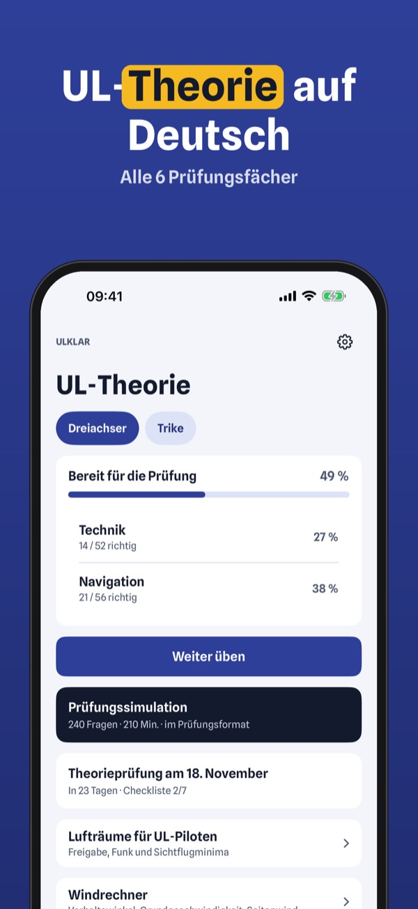
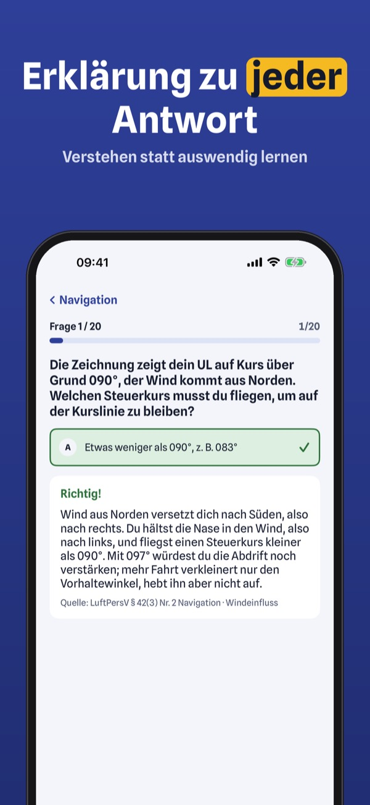
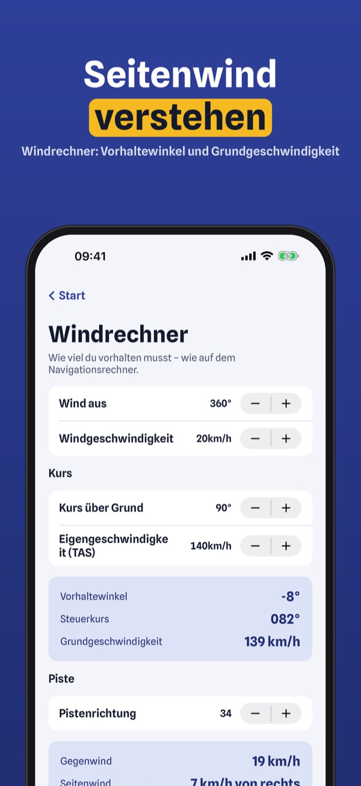
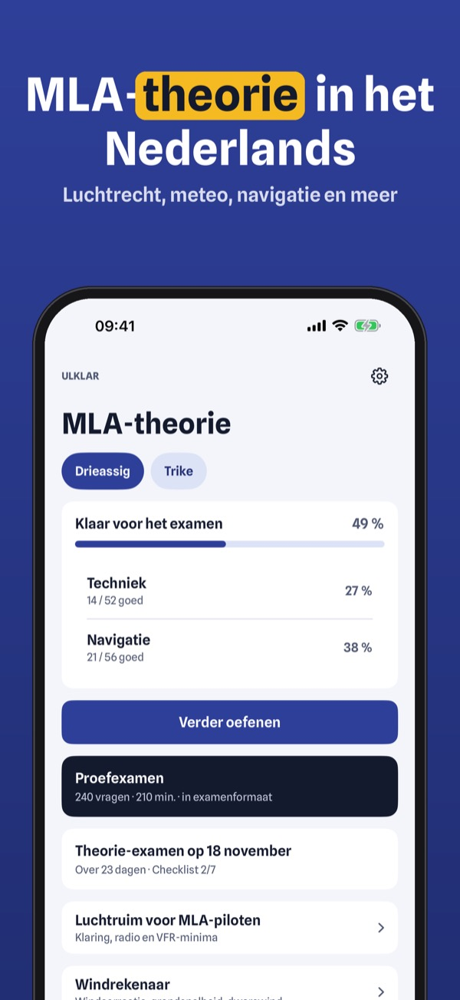
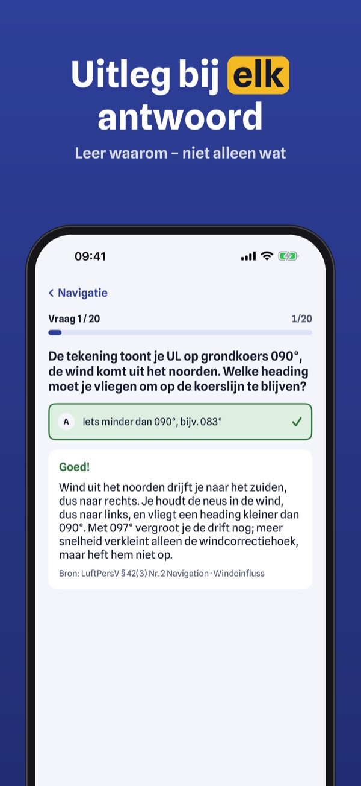
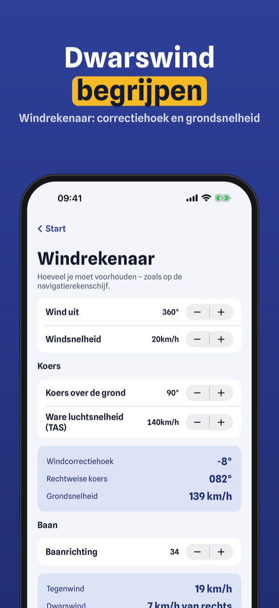

Prüfung für Ultraleichtpiloten
Übe die Theorie für den UL-Schein: eigene Fragen zu allen 6 Fächern, Prüfungssimulation und Erklärungen – auf Deutsch und offline.



ULklar hilft dir, die Theorie für den Ultraleicht-Pilotenschein zu üben – mit eigenen Fragen zu Luftrecht, Navigation, Meteorologie und Technik und einer Erklärung zu jeder Antwort.
20 Fragen, die Begriffe und die Checkliste kannst du ohne Kauf nutzen. Die Vollversion ist ein Einmalkauf und schaltet alle Fragen, Simulationen und die Statistik frei. Kein Abo.
ULklar ist unabhängig und nicht mit DULV, DAeC, LBA, Austro Control oder BAZL verbunden. Die Fragen sind eigene und stammen nicht aus dem Fragenkatalog.
Terms of Use (EULA): https://www.apple.com/legal/internet-services/itunes/dev/stdeula/
Privacy: https://baytechbv.github.io/privacy/ul-theorie-dach/
Oefen voor je MLA-brevet
Oefen de theorie voor je MLA-brevet: eigen vragen over alle vakken, proefexamens en uitleg – in het Nederlands en offline.



ULklar helpt je de theorie voor het brevet voor microlights (MLA) te oefenen – met eigen vragen over luchtrecht, navigatie, meteorologie en techniek en uitleg bij elk antwoord.
Je kunt 20 vragen, de begrippenlijst en de checklist zonder aankoop gebruiken. De volledige versie is een eenmalige aankoop die alle vragen, proefexamens en statistiek ontgrendelt. Geen abonnement.
ULklar is onafhankelijk en niet verbonden aan de ILT of KNVvL. De vragen zijn eigen vragen.
Terms of Use (EULA): https://www.apple.com/legal/internet-services/itunes/dev/stdeula/
Privacy: https://baytechbv.github.io/privacy/ul-theorie-dach/